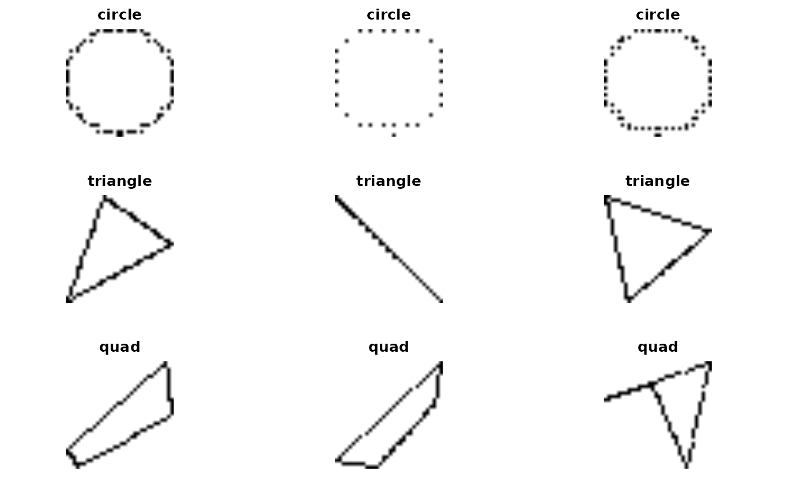

vignettes/geom_shapes.Rmd
geom_shapes.RmdIn this vignette we consider how to classify images representing geometric shapes. The idea is that we can produce very large training sets from specified classes and explore relationships between complexity of comparison tasks, training set size, and accuracy.
We’ll work with the image-classifying CNN from ISLR.
We have code that situates pixels derived from randomly constructed and positioned circles, triangles, and quadrilaterals in a 32 x 32 plane. We form ImageArray instances for each geometric type.
library(littleDeep)
library(abind)
set.seed(1234)
NIMAGES=2500
build_array = function( shapefun = rancirc, nimages=NIMAGES, sidelength=64, depth=3, npts=90, ... ) {
tmp = array(1, dim=c(nimages,sidelength,sidelength,depth)) # store images with 0 for dark
for (i in seq_len(nimages)) {
z = shapefun(npts=npts, ...)
p = load_jpeg(z$x, z$y, siz=sidelength, dim=c(sidelength,sidelength,3))
tmp[i,,,] = p
}
tmp
}
# training data
circarr = build_array( rancirc, sidelength=32, side_plane=32, npts=120 )
triarr = build_array( rantri, sidelength=32, side_plane=32, npts=40 )
quadarr = build_array( ranquad, sidelength=32, side_plane=32, npts=30 )
allsh = abind(circarr, triarr, along=1)
allsh = abind(allsh, quadarr, along=1)
shapes = ImageArray(allsh, types=rep(c("circle", "triangle", "quad"), each=NIMAGES))
# test data
test_circarr = build_array( rancirc, sidelength=32, side_plane=32, npts=120 )
test_triarr = build_array( rantri, sidelength=32, side_plane=32, npts=40 )
test_quadarr = build_array( ranquad, sidelength=32, side_plane=32, npts=30 )
test_allsh = abind(test_circarr, test_triarr, along=1)
test_allsh = abind(test_allsh, test_quadarr, along=1)
test_shapes = ImageArray(test_allsh, types=rep(c("circle", "triangle", "quad"), each=NIMAGES))
preview(shapes[c(1:3, 2501:2503, 5001:5003)])
## NULL